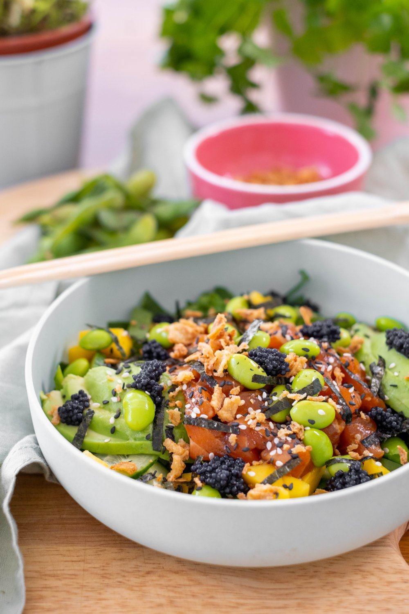

Description
This delicious summery salad will surely be a smash hit with your
friends and family.
It's an easy to make dish stuffed with vitamins and nutrients that make
your tummy go "yummmmm!!!"
Ingredients
- 320 grams of rice
- half a cucumber
- 2 nori leaves
- 2 portions of seaweed salad
- 4 tbsps of sunflower oil
- 12 tbsps of rice vinegar
- 200 grams of soy beans
- 6 spring onions
- 250 grams of smoked salmon
- 2 ripe avocado's
- 1 tbsp of sesame seeds
-
Soy sauce [to put on the table for people to add if as they wish
Steps
- Cook the rice at least 4 hours in advance dry, then let it sit for 10 minutes and put it in a big bowl with a cover to cool down in the fridge.
- Slice the cucumber in small blocks and put salt on them.
- Take the nori leaves and pull them through a fire quickly to make them nice and crispy, then cut up the nori leaves.
- Chop the seaweed salad up.
- Put the oil and vinegar throught the rice.
- Add the soybeans, spring onion, salmon, seaweedsalad and avocado to the rice.
- Right before serving add the cucumber and the nori leaves.
- Divide it into bowls and sprinkle some sesame seeds on top.
- Let the people themselves add soysauce to their tast
- ***[Optional: wasabi can be added but will quickly dominate the flavour]
- Bon apetit!